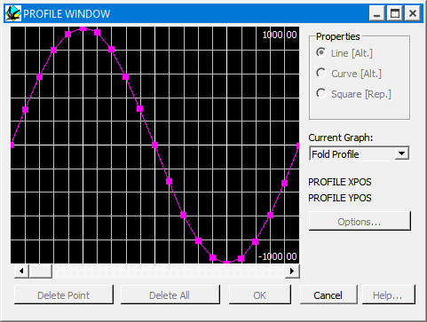

Profile windows
When defining a geological event by profile (faults, shear zones, folds, alteration haloes) a standardised profile window appears:

Three point based drawing modes are allowed in this window:
Lines
Each point on the profile is joined by a straight line.
Curves
The profile is defined by a Bezier Curve that does not have to pass through each point (except the end points)
Square
A square waveform is defined by the points (This is mostly used for replacement zones)
Add points
Individual points may be added to the profile by clicking in the window
Delete Points
Individual points may be deleted from the profile by selecting them with the mouse and then clicking on the Delete Point button
Moving Points
Individual points may be moved by dragging them around the window with the mouse.
For alteration zones, the scaling of the window may be altered by clicking on the Options button, and different properties can be individually varied by selecting from the Current Graph menu list.
For deformation event profiles, scaling is accomplished using the normal scaling parameters, such as fold Amplitude.
Noddy · open source under the MIT licence · Loop3D/noddy_qt